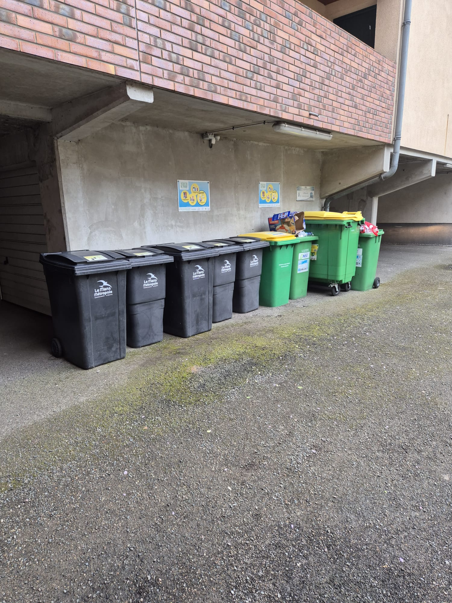

05
Tri sélectif
RAVITAILLEMENT
Ordures
ménagères
ménagères
Bacs noirs
dans le parking
dans le parking
Plastique
& Carton
& Carton
Bacs verts
dans le parking
dans le parking
Verre
Placard
de l'entrée
de l'entrée

♻️ Bacs noirs = ordures · Bacs verts = plastique & carton

🍾 Caisse à verre · Placard de l'entrée